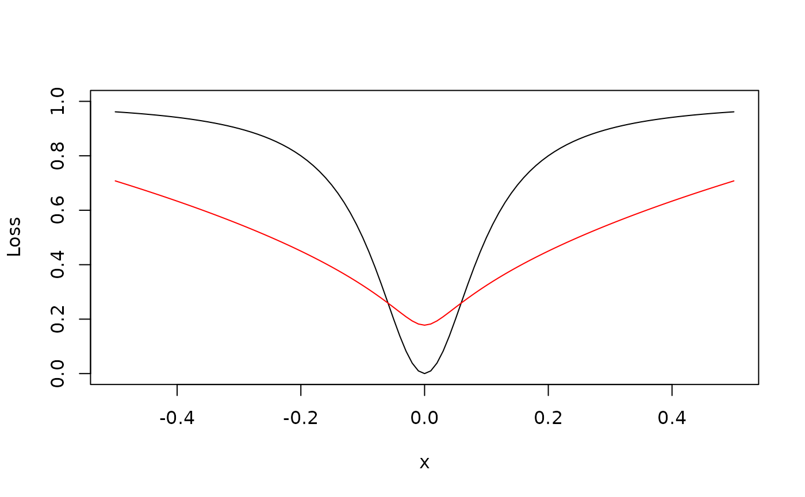

Penalized Estimation
penalized.Rmd
library(longcfa)
library(lavaan)
#> This is lavaan 0.6-21
#> lavaan is FREE software! Please report any bugs.
library(plavaan)The data used in this vignette is a subset from the daily dairy data described in Mackinnon et al. (2020), which contains 7 waves of daily level of state social anxiety (SSA) measured with 7 items at each wave. The data is already converted to wide format, with some missing data.
data("mackinnon_etal_wide", package = "longcfa")
mackinnon_etal_wide[-1] <- lapply(mackinnon_etal_wide[-1], as.integer)
summary(mackinnon_etal_wide)
#> id ssa1_2 ssa1_3 ssa1_4
#> Min. : 15.0 Min. :1.000 Min. :1.000 Min. :1.000
#> 1st Qu.: 98.0 1st Qu.:2.000 1st Qu.:2.000 1st Qu.:2.000
#> Median :174.0 Median :3.000 Median :3.000 Median :3.000
#> Mean :173.3 Mean :2.971 Mean :2.803 Mean :2.751
#> 3rd Qu.:246.0 3rd Qu.:4.000 3rd Qu.:4.000 3rd Qu.:4.000
#> Max. :334.0 Max. :5.000 Max. :5.000 Max. :5.000
#> NAs :20 NAs :23 NAs :32
#> ssa1_5 ssa1_6 ssa1_7 ssa1_8
#> Min. :1.000 Min. :1.000 Min. :1.000 Min. :1.000
#> 1st Qu.:2.000 1st Qu.:2.000 1st Qu.:2.000 1st Qu.:1.000
#> Median :3.000 Median :3.000 Median :3.000 Median :3.000
#> Mean :2.624 Mean :2.624 Mean :2.597 Mean :2.548
#> 3rd Qu.:3.000 3rd Qu.:4.000 3rd Qu.:3.000 3rd Qu.:3.000
#> Max. :5.000 Max. :5.000 Max. :5.000 Max. :5.000
#> NAs :32 NAs :27 NAs :40 NAs :44
#> ssa2_2 ssa2_3 ssa2_4 ssa2_5
#> Min. :1.000 Min. :1.000 Min. :1.000 Min. :1.000
#> 1st Qu.:2.000 1st Qu.:1.000 1st Qu.:1.000 1st Qu.:1.000
#> Median :3.000 Median :3.000 Median :3.000 Median :2.000
#> Mean :2.705 Mean :2.555 Mean :2.603 Mean :2.472
#> 3rd Qu.:4.000 3rd Qu.:4.000 3rd Qu.:3.000 3rd Qu.:3.000
#> Max. :5.000 Max. :5.000 Max. :5.000 Max. :5.000
#> NAs :20 NAs :23 NAs :32 NAs :32
#> ssa2_6 ssa2_7 ssa2_8 ssa3_2
#> Min. :1.000 Min. :1.000 Min. :1.000 Min. :1.000
#> 1st Qu.:1.000 1st Qu.:1.000 1st Qu.:1.000 1st Qu.:2.000
#> Median :2.000 Median :2.000 Median :2.000 Median :3.000
#> Mean :2.534 Mean :2.507 Mean :2.525 Mean :2.701
#> 3rd Qu.:4.000 3rd Qu.:3.000 3rd Qu.:3.000 3rd Qu.:4.000
#> Max. :5.000 Max. :5.000 Max. :5.000 Max. :5.000
#> NAs :27 NAs :40 NAs :44 NAs :20
#> ssa3_3 ssa3_4 ssa3_5 ssa3_6
#> Min. :1.000 Min. :1.000 Min. :1.000 Min. :1.000
#> 1st Qu.:1.000 1st Qu.:1.000 1st Qu.:1.000 1st Qu.:1.000
#> Median :2.000 Median :2.000 Median :2.000 Median :2.000
#> Mean :2.466 Mean :2.485 Mean :2.367 Mean :2.483
#> 3rd Qu.:3.000 3rd Qu.:3.000 3rd Qu.:3.000 3rd Qu.:3.000
#> Max. :5.000 Max. :5.000 Max. :5.000 Max. :5.000
#> NAs :23 NAs :32 NAs :32 NAs :27
#> ssa3_7 ssa3_8 ssa4_2 ssa4_3
#> Min. :1.000 Min. :1.000 Min. :1.000 Min. :1.000
#> 1st Qu.:1.000 1st Qu.:1.000 1st Qu.:2.000 1st Qu.:2.000
#> Median :2.000 Median :2.000 Median :3.000 Median :3.000
#> Mean :2.489 Mean :2.281 Mean :2.909 Mean :2.655
#> 3rd Qu.:3.000 3rd Qu.:3.000 3rd Qu.:4.000 3rd Qu.:3.750
#> Max. :5.000 Max. :5.000 Max. :5.000 Max. :5.000
#> NAs :40 NAs :44 NAs :20 NAs :23
#> ssa4_4 ssa4_5 ssa4_6 ssa4_7
#> Min. :1.000 Min. :1.000 Min. :1.000 Min. :1.000
#> 1st Qu.:1.000 1st Qu.:1.000 1st Qu.:1.000 1st Qu.:1.000
#> Median :3.000 Median :2.500 Median :3.000 Median :2.000
#> Mean :2.594 Mean :2.535 Mean :2.538 Mean :2.484
#> 3rd Qu.:4.000 3rd Qu.:4.000 3rd Qu.:3.000 3rd Qu.:3.000
#> Max. :5.000 Max. :5.000 Max. :5.000 Max. :5.000
#> NAs :32 NAs :33 NAs :27 NAs :40
#> ssa4_8 ssa5_2 ssa5_3 ssa5_4
#> Min. :1.000 Min. :1.000 Min. :1.000 Min. :1.000
#> 1st Qu.:1.000 1st Qu.:2.000 1st Qu.:1.000 1st Qu.:1.000
#> Median :2.000 Median :3.000 Median :3.000 Median :2.000
#> Mean :2.516 Mean :2.747 Mean :2.513 Mean :2.533
#> 3rd Qu.:3.000 3rd Qu.:4.000 3rd Qu.:3.000 3rd Qu.:3.000
#> Max. :5.000 Max. :5.000 Max. :5.000 Max. :5.000
#> NAs :44 NAs :20 NAs :23 NAs :32
#> ssa5_5 ssa5_6 ssa5_7 ssa5_8 ssa6_2
#> Min. :1.000 Min. :1.0 Min. :1.000 Min. :1.000 Min. :1.000
#> 1st Qu.:1.000 1st Qu.:1.0 1st Qu.:1.000 1st Qu.:1.000 1st Qu.:1.000
#> Median :2.000 Median :2.0 Median :2.000 Median :2.000 Median :2.000
#> Mean :2.467 Mean :2.5 Mean :2.335 Mean :2.396 Mean :2.407
#> 3rd Qu.:3.000 3rd Qu.:4.0 3rd Qu.:3.000 3rd Qu.:3.000 3rd Qu.:3.000
#> Max. :5.000 Max. :5.0 Max. :5.000 Max. :5.000 Max. :5.000
#> NAs :32 NAs :27 NAs :40 NAs :44 NAs :20
#> ssa6_3 ssa6_4 ssa6_5 ssa6_6
#> Min. :1.000 Min. :1.000 Min. :1.000 Min. :1.000
#> 1st Qu.:1.000 1st Qu.:1.000 1st Qu.:1.000 1st Qu.:1.000
#> Median :2.000 Median :2.000 Median :2.000 Median :2.000
#> Mean :2.139 Mean :2.109 Mean :2.192 Mean :2.145
#> 3rd Qu.:3.000 3rd Qu.:3.000 3rd Qu.:3.000 3rd Qu.:3.000
#> Max. :5.000 Max. :5.000 Max. :5.000 Max. :5.000
#> NAs :23 NAs :32 NAs :32 NAs :27
#> ssa6_7 ssa6_8 ssa7_2 ssa7_3 ssa7_4
#> Min. :1.000 Min. :1.00 Min. :1.000 Min. :1.00 Min. :1.000
#> 1st Qu.:1.000 1st Qu.:1.00 1st Qu.:1.000 1st Qu.:1.00 1st Qu.:1.000
#> Median :2.000 Median :2.00 Median :2.000 Median :2.00 Median :2.000
#> Mean :2.091 Mean :2.12 Mean :2.129 Mean :2.05 Mean :2.004
#> 3rd Qu.:3.000 3rd Qu.:3.00 3rd Qu.:3.000 3rd Qu.:3.00 3rd Qu.:3.000
#> Max. :5.000 Max. :5.00 Max. :5.000 Max. :5.00 Max. :5.000
#> NAs :41 NAs :45 NAs :20 NAs :23 NAs :32
#> ssa7_5 ssa7_6 ssa7_7 ssa7_8
#> Min. :1.000 Min. :1.000 Min. :1.000 Min. :1.000
#> 1st Qu.:1.000 1st Qu.:1.000 1st Qu.:1.000 1st Qu.:1.000
#> Median :2.000 Median :2.000 Median :2.000 Median :2.000
#> Mean :2.044 Mean :2.026 Mean :2.072 Mean :1.935
#> 3rd Qu.:3.000 3rd Qu.:3.000 3rd Qu.:3.000 3rd Qu.:3.000
#> Max. :5.000 Max. :5.000 Max. :5.000 Max. :5.000
#> NAs :32 NAs :27 NAs :40 NAs :45
#> psp1_2 psp1_3 psp1_4 psp1_5
#> Min. :1.000 Min. :1.000 Min. :1.000 Min. :1.000
#> 1st Qu.:3.000 1st Qu.:2.000 1st Qu.:2.000 1st Qu.:2.000
#> Median :5.000 Median :4.000 Median :4.000 Median :4.000
#> Mean :4.483 Mean :4.034 Mean :3.943 Mean :3.769
#> 3rd Qu.:6.000 3rd Qu.:6.000 3rd Qu.:5.000 3rd Qu.:5.000
#> Max. :7.000 Max. :7.000 Max. :7.000 Max. :7.000
#> NAs :21 NAs :23 NAs :32 NAs :32
#> psp1_6 psp1_7 psp1_8 psp2_2 psp2_3
#> Min. :1.000 Min. :1.000 Min. :1.000 Min. :1.000 Min. :1.00
#> 1st Qu.:2.000 1st Qu.:2.000 1st Qu.:2.000 1st Qu.:3.000 1st Qu.:3.00
#> Median :4.000 Median :4.000 Median :4.000 Median :5.000 Median :4.00
#> Mean :3.855 Mean :3.869 Mean :3.737 Mean :4.517 Mean :4.16
#> 3rd Qu.:5.750 3rd Qu.:6.000 3rd Qu.:5.000 3rd Qu.:6.000 3rd Qu.:6.00
#> Max. :7.000 Max. :7.000 Max. :7.000 Max. :7.000 Max. :7.00
#> NAs :27 NAs :40 NAs :44 NAs :21 NAs :23
#> psp2_4 psp2_5 psp2_6 psp2_7
#> Min. :1.000 Min. :1.000 Min. :1.000 Min. :1.000
#> 1st Qu.:2.000 1st Qu.:2.000 1st Qu.:2.000 1st Qu.:2.000
#> Median :4.000 Median :4.000 Median :4.000 Median :4.000
#> Mean :3.934 Mean :3.734 Mean :3.782 Mean :3.665
#> 3rd Qu.:6.000 3rd Qu.:5.000 3rd Qu.:5.000 3rd Qu.:5.000
#> Max. :7.000 Max. :7.000 Max. :7.000 Max. :7.000
#> NAs :32 NAs :32 NAs :27 NAs :40
#> psp2_8 psp3_2 psp3_3 psp3_4
#> Min. :1.000 Min. :1.000 Min. :1.000 Min. :1.000
#> 1st Qu.:2.000 1st Qu.:3.000 1st Qu.:2.000 1st Qu.:2.000
#> Median :3.000 Median :5.000 Median :4.000 Median :4.000
#> Mean :3.636 Mean :4.456 Mean :4.042 Mean :3.751
#> 3rd Qu.:5.000 3rd Qu.:6.000 3rd Qu.:6.000 3rd Qu.:5.000
#> Max. :7.000 Max. :7.000 Max. :7.000 Max. :7.000
#> NAs :44 NAs :20 NAs :24 NAs :32
#> psp3_5 psp3_6 psp3_7 psp3_8
#> Min. :1.000 Min. :1.000 Min. :1.000 Min. :1.000
#> 1st Qu.:2.000 1st Qu.:2.000 1st Qu.:2.000 1st Qu.:1.000
#> Median :4.000 Median :4.000 Median :3.000 Median :3.000
#> Mean :3.607 Mean :3.581 Mean :3.568 Mean :3.442
#> 3rd Qu.:5.000 3rd Qu.:5.000 3rd Qu.:5.000 3rd Qu.:5.000
#> Max. :7.000 Max. :7.000 Max. :7.000 Max. :7.000
#> NAs :32 NAs :27 NAs :41 NAs :44To use longcfa(), we first create an indicator matrix
that specifies how the indicators align across time points. Variables in
the same row correspond to the same indicator across time points.
ind_mat <- matrix(
grep("^ssa", names(mackinnon_etal_wide), value = TRUE),
nrow = 7,
byrow = TRUE
)
ind_mat
#> [,1] [,2] [,3] [,4] [,5] [,6] [,7]
#> [1,] "ssa1_2" "ssa1_3" "ssa1_4" "ssa1_5" "ssa1_6" "ssa1_7" "ssa1_8"
#> [2,] "ssa2_2" "ssa2_3" "ssa2_4" "ssa2_5" "ssa2_6" "ssa2_7" "ssa2_8"
#> [3,] "ssa3_2" "ssa3_3" "ssa3_4" "ssa3_5" "ssa3_6" "ssa3_7" "ssa3_8"
#> [4,] "ssa4_2" "ssa4_3" "ssa4_4" "ssa4_5" "ssa4_6" "ssa4_7" "ssa4_8"
#> [5,] "ssa5_2" "ssa5_3" "ssa5_4" "ssa5_5" "ssa5_6" "ssa5_7" "ssa5_8"
#> [6,] "ssa6_2" "ssa6_3" "ssa6_4" "ssa6_5" "ssa6_6" "ssa6_7" "ssa6_8"
#> [7,] "ssa7_2" "ssa7_3" "ssa7_4" "ssa7_5" "ssa7_6" "ssa7_7" "ssa7_8"Scalar invariance model
lscalar_fit <- longcfa(
ind_mat,
lv_names = paste0("SSA", 2:8),
data = mackinnon_etal_wide,
lag_cov = TRUE,
missing = "fiml",
estimator = "mlr",
long_equal = c("loadings", "intercepts")
)
anova(lconfig_fit, lscalar_fit)
#>
#> Scaled Chi-Squared Difference Test (method = "satorra.bentler.2001")
#>
#> lavaan->lavTestLRT():
#> lavaan NOTE: The "Chisq" column contains standard test statistics, not the
#> robust test that should be reported per model. A robust difference test is
#> a function of two standard (not robust) statistics.
#>
#> Df AIC BIC Chisq Chisq diff Df diff Pr(>Chisq)
#> lconfig_fit 959 25714 26837 1650.9
#> lscalar_fit 1031 25669 26535 1749.7 108.39 72 0.003599 **
#> ---
#> Signif. codes: 0 '***' 0.001 '**' 0.01 '*' 0.05 '.' 0.1 ' ' 1With 7 time points and 7 items, there are 49 loadings and 49 intercepts. For loadings, we reduce 49 loadings to 7 by imposing equality constraints across time, while in the mean time allowing the latent variances for the 6 time points after time 1 to be free, so in total we have save \(p(T - 1) - (T - 1) = (p - 1)(T - 1) = 36\) parameters. Same for intercepts, which result in 72 fewer parameters in the scalar invariance model.
Loss/Penalty Function
The idea of penalized estimation for measurement invariance is to impose a penalty on the pairwise differences of loadings and intercepts across time points, so that a model with fewer large differences in the measurement parameters would be favoured. Here we illustrate two penalty functions: the alignment loss function (ALF, discussed in Asparouhov & Muthen, 2024) and the \(L_0\) approximation function (L0a, discussed in Robitzsch, 2023). The following shows the two loss functions:
curve(l0a, from = -0.5, to = 0.5, ylab = "Loss", ylim = c(0, 1))
curve(alf, from = -0.5, to = 0.5, add = TRUE, col = "red")
Note that the ALF is an approximation of the \(L_{0.5}\) penalty. We can compute the loss values for the loadings and intercepts, for the configural and the scalar model. In theory, the loss should be zero for the scalar model, although it will be a non-zero value as we use a continuous function to approximate \(L_0\) penalty.
# Loss function for configural model
ld_mat_c <- get_lav_par_mat(lconfig_fit, "=~", ind_mat)
int_mat_c <- get_lav_par_mat(lconfig_fit, "~1", ind_mat)
composite_pair_loss(t(ld_mat_c), fun = alf)
#> [1] 10.72279
composite_pair_loss(t(int_mat_c), fun = alf)
#> [1] 13.85047
# Loss function for scalar model
ld_mat_s <- get_lav_par_mat(lscalar_fit, "=~", ind_mat)
int_mat_s <- get_lav_par_mat(lscalar_fit, "~1", ind_mat)
composite_pair_loss(t(ld_mat_s), fun = alf)
#> [1] 7.468774
composite_pair_loss(t(int_mat_s), fun = alf)
#> [1] 7.468774Using Penalized Estimation
With penalized estimation, we first specify an over-parameterized
model that estimates all measurement (loadings and intercepts) and
structural parameters (latent means and variances) freely across time
points, except that the latent variable in Time 1 is standardized. We
can use the penalized_longcfa() function, which is a
wrapper of plavaan::penalized_est(), to directly fit the
penalized longitudinal CFA model. First, we try the ALF penalty with a
tuning parameter of 0.1 (which is arbitrary).
alf_fit <- penalized_longcfa(
ind_mat,
lv_names = paste0("SSA", 2:8),
data = mackinnon_etal_wide,
lag_cov = TRUE,
w = 0.1,
pen_fn = "alf",
missing = "fiml",
estimator = "mlr",
start = lscalar_fit
)
# Loss function
ld_mat_a <- get_lav_par_mat(alf_fit, "=~", ind_mat)
int_mat_a <- get_lav_par_mat(alf_fit, "~1", ind_mat)
composite_pair_loss(t(ld_mat_a), fun = alf)
#> [1] 7.519539
composite_pair_loss(t(int_mat_a), fun = alf)
#> [1] 7.631119Alternatively, we can first create an unidentified lavaan model with
the free_latvars = TRUE and
free_latmeans = TRUE arguments, and then use
plavaan::penalized_est() to fit the model.
# Specify the under-identified model
lconfig_fit_un <- longcfa(
ind_mat,
lv_names = paste0("SSA", 2:8),
data = mackinnon_etal_wide,
lag_cov = TRUE,
std.lv = TRUE,
free_latvars = TRUE,
free_latmeans = TRUE,
start = lscalar_fit,
missing = "fiml",
estimator = "mlr",
do.fit = FALSE
)We need to identify the corresponding ID for the loadings and
intercepts parameter, using the get_lav_par_id()
function.
ld_id <- get_lav_par_id(lconfig_fit_un, "=~", ind_mat)
int_id <- get_lav_par_id(lconfig_fit_un, "~1", ind_mat)
alf_fit <- penalized_est(
lconfig_fit_un,
w = 0.1,
pen_fn = "alf",
pen_diff_id = list(loadings = t(ld_id), intercepts = t(int_id))
)Next, we try the L0a penalty while setting the tuning parameter to \(\log(N) / N / 2\), which approximately corresponds to minimizing the Bayesian information criterion (BIC) (as discussed in Robitzsch, 2023).
dbic_fit <- penalized_longcfa(
ind_mat,
lv_names = paste0("SSA", 2:8),
data = mackinnon_etal_wide,
lag_cov = TRUE,
w = log(261) / 261 / 2,
pen_fn = "l0a",
missing = "fiml",
estimator = "mlr",
start = lscalar_fit
)
# dbic_fit <- penalized_est(
# lconfig_fit_un,
# w = log(261) / 261 / 2, # based on eq (13) of https://www.mdpi.com/2624-8611/5/4/75#FD9-psych-05-00075
# pen_fn = "l0a",
# pen_diff_id = list(t(ld_id), t(int_id))
# )
# AIC penalty
# l0fit_2 <- penalized_est(
# lconfig_fit_un,
# w = 1 / 261,
# pen_fn = "l0a",
# pen_diff_id = list(t(ld_id), t(int_id))
# )
# Loss function
ld_mat_p <- get_lav_par_mat(dbic_fit, "=~", ind_mat)
int_mat_p <- get_lav_par_mat(dbic_fit, "~1", ind_mat)
composite_pair_loss(t(ld_mat_p), fun = l0a)
#> [1] 1.078996
composite_pair_loss(t(int_mat_p), fun = l0a)
#> [1] 3.800752Comparing the latent means and variances
The first seven numbers are the latent means, and the last seven numbers are the latent variances. The configural model is not included here as the latent means and variances are arbitrarily set to 0 and 1, respectively, for all waves.
ests <- lapply(
list(
"Scalar" = lscalar_fit,
"ALF (w = 0.1)" = alf_fit,
"L0 (DBIC)" = dbic_fit
),
function(fit) {
est <- lavInspect(fit, "est")
c(est$alpha, diag(est$psi))
}
)
do.call(rbind, ests) |>
knitr::kable(digits = 3)| SSA2 | SSA3 | SSA4 | SSA5 | SSA6 | SSA7 | SSA8 | ||||||||
|---|---|---|---|---|---|---|---|---|---|---|---|---|---|---|
| Scalar | 0 | -0.189 | -0.218 | -0.268 | -0.260 | -0.281 | -0.309 | 1 | 1.093 | 1.096 | 1.188 | 1.196 | 1.101 | 1.227 |
| ALF (w = 0.1) | 0 | -0.188 | -0.219 | -0.267 | -0.260 | -0.281 | -0.308 | 1 | 1.091 | 1.094 | 1.190 | 1.198 | 1.103 | 1.225 |
| L0 (DBIC) | 0 | -0.188 | -0.220 | -0.264 | -0.261 | -0.285 | -0.308 | 1 | 1.084 | 1.087 | 1.191 | 1.200 | 1.106 | 1.215 |